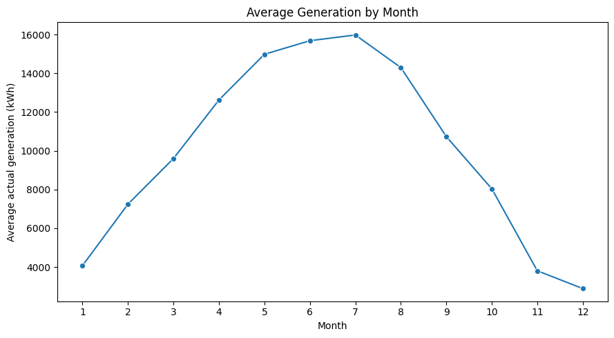
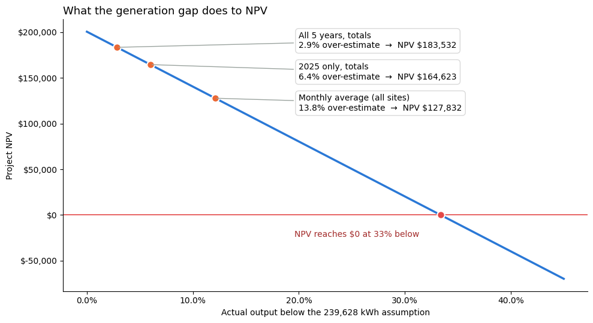
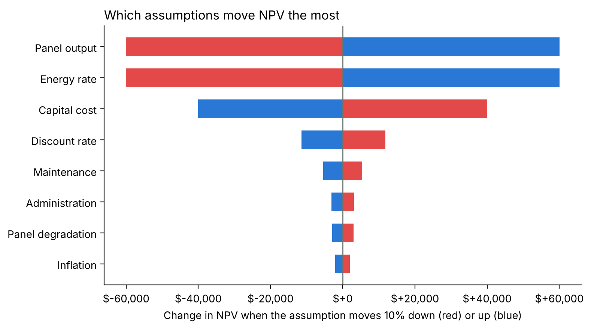
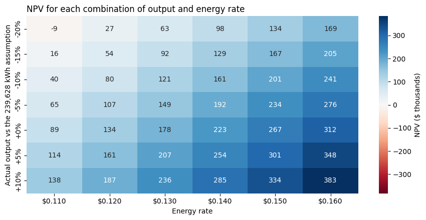

BVGEC financial model: is the solar project worth building?
Team project for Bow Valley Green Energy Co-op (BVGEC), CMPT 3835. Team: Amara, Deogyne, Mara and Rahul.
The problem
BVGEC wanted to know whether its solar projects would earn more than they cost over a 25-year panel life. We expressed the answer as net present value (NPV), and we also needed to show how sure we were, since the model's generation figures ran higher than the measured data.
My role
I was Scrum Master and the machine analysis student on the team. I set up and ran the team's Scrum process in Trello and Slack, and I [built / helped build] the analysis notebook, the Streamlit calculator, the NPV chatbot and the client presentation
What we did
- Cleaned the data (601 rows down to 579) and explored it: output follows sunlight and temperature, and snow cuts it sharply.
- Built a calculation engine that follows BVGEC's Excel projection, then checked it against the calculator.
- Tested the model against measured output, ran sensitivity analysis, and compared payout plans.
- Deployed a calculator and a rules-based chatbot so the team could test numbers themselves.
Working with the client and team
We ran the project as a Scrum team, with tasks and sprints on a Trello board and day-to-day messages on Teams and WhatsApp. When something in BVGEC's materials was unclear, we sent written questions to the client and waited for answers before building on an assumption. At each demo we asked clarifying questions, wrote down the feedback, and applied it in the next update. I kept us on schedule by splitting the work into small tasks with an owner and a date.
What we found

Output follows the seasons: about 16,000 kWh in July against about 2,900 in December.

NPV stays positive even if the model over-estimates generation by 13.8% (NPV $127,832).

Panel output and energy rate move NPV the most, by $120,201 each when changed by 10%.

NPV for every combination of output and energy rate.
Recommendations
- Proceed: NPV is positive in every gap we tested.
- Budget on measured output, because the gap grew from 0.3% in 2021 to 6.4% in 2025.
- Pay members 5% to 7% a year from year 4, which keeps retained earnings above $0.
- Confirm the discount rate and energy price, because they move the answer most.
Responsible AI and limits
- The data was synthetic practice data, so the findings show the method and not real site performance.
- Five years is a short window for judging panel degradation.
- The discount rate (2%) is our placeholder, since BVGEC's spreadsheet gives none.
- The chatbot is rules-based, so every answer comes from the same formulas as the model.
What I would improve
I would improve the model by using more real-world solar generation data, longer historical records and verified financial inputs to make predictions and dashboard results more reliable.